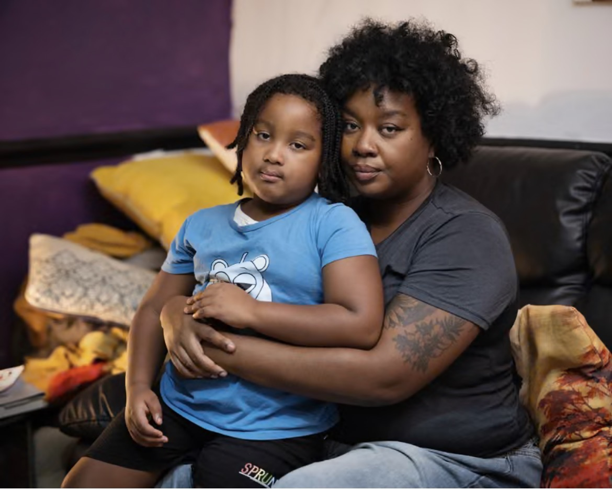
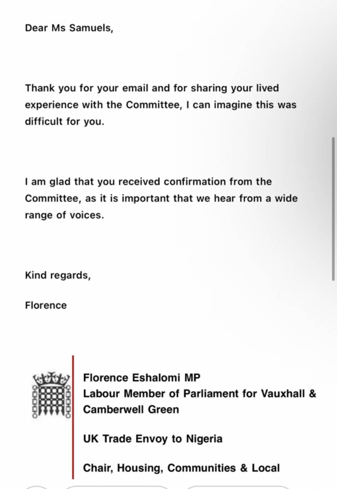

Founded by Alicia Samuels
A mother-led campaign for safer temporary housing.
Aeon’s Law was created from lived experience of temporary accommodation, housing disrepair, safeguarding concerns and the impact unsafe conditions can have on children and families.
This campaign calls for stronger legal duties, faster action, clear accountability and emergency protection where children are placed in unsafe accommodation.
Campaign Origins
From Campaigning to Legislative Change
This photograph was taken during one of my housing campaigns with ACORN outside Tower Hamlets Town Hall. Together, we challenged the housing crisis and called for safe, secure and affordable homes for everyone.
That campaign became an important step in my journey. While collective action raises awareness, my lived experience as a mother living in temporary accommodation showed me that lasting change also requires legal reform.
That is why I founded Aeon's Law — a campaign to strengthen legal protections for children and families living in temporary accommodation, so that every child has a safe place to call home.
The 5 Core Demands
What Aeon’s Law is calling for
1. Mandatory inspections
Every family temporary accommodation placement should be inspected before children are placed there.
2. Repair deadlines
Vermin, damp, mould, heating, hot water and safety risks must have strict legal repair deadlines.
3. Emergency rehousing
Children should be moved urgently when serious hazards continue or repairs are not completed.
4. Stronger accountability
Councils, housing providers and managing agents must face consequences when children are left at risk.
5. Child impact protection
Children’s health, education, sleep, safety and wellbeing must be central to housing decisions.

Why this matters
Temporary should not mean unsafe.
Families need more than sympathy. They need enforceable standards, deadlines and protection before harm is done.
Aeon’s Law is about dignity, safety, accountability and children being treated as children — not case numbers.
Evidence & Credibility
Built on lived experience, evidence and public accountability.
Evidence Submitted to the UK Parliament
I submitted written evidence to the Housing, Communities and Local Government Committee about my family's lived experience of temporary accommodation and the urgent need for stronger safeguarding protections for children living in unsuitable housing.
My evidence now forms part of the official Parliamentary record and became one of the foundations for Aeon's Law—a campaign calling for safer temporary accommodation, greater accountability and better protection for children and families across the UK.
Read My Parliamentary Evidence →Florence Eshalomi MP
Acknowledgement from the Chair of the Housing, Communities and Local Government Committee confirming receipt of evidence.

Media Coverage
National reporting highlighting the growing crisis facing homeless children and families.
Lived Experience
Housing records, complaints, safeguarding concerns, photographs and correspondence documenting conditions experienced by families.
Campaign Recognition
Why this campaign is credible.
✔ Parliament Petition
Published on the official UK Parliament petitions website.
🏛 Parliamentary Evidence
Evidence submitted to the Housing, Communities and Local Government Committee.
📰 Media Context
National reporting reflects the wider housing crisis affecting children and families.
📂 Documented Experience
Built from lived experience, complaints, correspondence and housing records.
National Housing Crisis
Children and families across the UK are being failed.
BBC News
Temporary accommodation and the impact on children and families.
iNews
Family homelessness and long-term displacement.
The Guardian
Teachers supporting homeless pupils with basic needs.
Daily Mirror
The human cost of homelessness for mothers and children.
Metro
The reality of homelessness through a child’s eyes.
Birmingham Mail
Stories highlighting the growing housing emergency.
The Time For Change Is Now
Every child deserves a safe place to call home.
Across the UK, children are living in temporary accommodation affected by damp, mould, vermin, overcrowding and unsafe conditions. Aeon’s Law calls for stronger protections, faster intervention and real accountability.
Designed and developed by
Crown & Code
Campaign founded by Alicia Samuels.